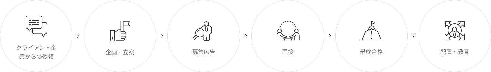

메인 이미지 입니다.
委託運営サービスを提供する
フィールドサービス
一部のプロセスを委託し、経営の効率を最大化します。
フィールドサービス
トランスコスモスコリアは、使用事業主と雇用契約後に進められる日程や方法などを協議し労働者の雇用関係を維持し、使用事業主の要求事項に応じて専門性と経験を基に最高の委託運営及び人材派遣サービスを提供します。
主なサービス
トランスコスモスコリアは革新をリードする様々なデジタルサービスを提供します。
-
オフライン業務運営代行
トランスコスモスコリアは、経営の効率性を高め、不確実なリスクを最小化するため、クライアント企業のニーズに適した専門業者に委託運営を任せることでサービス品質を向上させ、現場スタッフの管理及び効率的な運営により店舗、警備、清掃、施設、駐車場などのオフラインフィールドについての運営を行います。

-
人材派遣サービス
トランスコスモスコリアは、クライアント企業のオフライン店舗のCSレベルを診断し、従業員教育、勤怠及び店舗管理など多方面から運営状況を点検し、改善点を導き出すとともに、ソリューションを提供します。また、オフライン店舗を利用する顧客を対象に従業員に専門的なCSを提供し、ブランドイメージを向上させ、顧客クレームを事前に防ぎます。
特長
トランスコスモスコリアは、幅広い業界経験と最高の技術力を有しています。
-
事前業務教育及び訓練
クライアント企業に派遣される労働者に事前業務教育及び訓練を実施し、核心スキルを強化します。
-
効率的なスタッフ管理
スタッフ管理に対する負担を軽減し、スタッフ投入及び管理にかかる時間とコストを削減します。
-
スタッフ管理リスクの最小化
派遣による問題が発生した際は、人事管理が即時に対応しリスクを最小化します。